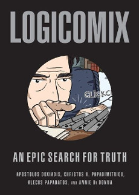
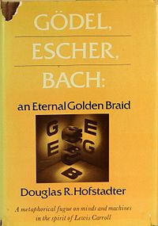
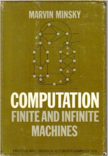
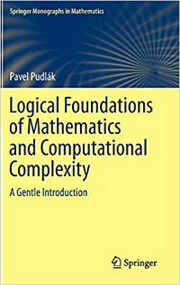

04/13/2019
One of my favorite courses in college was philosophy of language. Along with interesting philosphy it introduced me to the foundations of math project which has since become one of my favorite subjects to learn about.
Some of my favorite books of all time come out of this interest. I wanted to organize a few of these into a list for others who are interested in the topic. Note that many good books were left out in favor of the very best.
You will notice a theme in my commentary. The books I like most are those that don’t shy away from hard technical knowledge, but also explore the philosophical ideas behind them.
The list is arranged in a progressive sequence that will help prepare you for the next one.

Logicomix is actually a comic book! It tells an engaging historical narrative about the search for the foundations of math and the birth of analytic philosophy, in the early 20th century.
It introduces you to all the major characters such as Gödel, Russel, Frege, and Wittgenstein and motivates the kinds of problems they were trying to solve. The book also explores how these ideas connect to modern computer science.
It is an absolute joy to read and will give you a taste of whether this is an interesting subject for you.

You probably have seen this work recommended elsewhere. Gödel, Escher, Bach really deserves all the praise that it gets.
Hofstadter covers an enormous range of topics including formal systems, Godel’s proof, theory of computation, programming, molecular biology, and artificial intelligence. Every topic is presented beautifully and with a lot of philosophical discussion. In many ways it is an introduction to the big ideas in modern science. It is written for a general audience and assumes no mathematical background.
By: James Newman & Ernest Nagel
Gödel, Escher, Bach does a good job of introducing the incompleteness theorem and discussing its ramifications, but if you are like me you probably still won’t completely understand it after a first reading.
This concise book offers another perspective and a clear explanation of the mathematics of the proof, its general strategy, and the historical context surrounding the incompleteness problem.
By: Phillip Davis & Reuben Hersch

In the 17th century Descartes had a dream in which he saw a future world driven by mathematical calculations and logical systems. The theme of this book is how this dream has become a reality.
The book explores how mathematics and computer science work together, surveys several interesting fields, and examines ethical issues in the technological world. This book is not technical, and should be appropriate for anyone interested in science or technology.
If you like this book, the authors wrote another called The Mathematical Experience which is focused more on pure mathematics.
By: Marvin Minsky

Marvin Minsky is an incredibly clear and deep writer. In this work he provides a mathematical framework for thinking about mechanical machines and develops the theory of computation.
This book teaches you all you need to know about Turing machines, finite state, and neural networks. My project: McCulloch & Pitts Neural Net Simulator is based on this book.
To read this book, you should understand some logic and basic set theory such as that taught in an introductory proofs course.
Unfortunately, it is out of print and may be difficult to obtain (for a reasonable amount of money). I read it from my university’s library. If that is not an option, I recommend you find it online. If anyone knows of a place where I can reasonably purchase this book, let me know.
By: Gerald Sussman & Hal Abelson

This classic text is designed to teach programming to MIT students who have some technical background in another areas of math and science. It is a hard read, but it assumes no programming knowledge and teaches Scheme (a Lisp dialect) and its full inter-workings from the ground up.
If you want to be a professional programmer, this may be the only book you need to study. What other book teaches you to write a symbolic differentiator, interpreter, circuit simulator, and compiler?
Most of the material is mixed in the excercises so don’t skip them!
But, this is not just a programming book. It belongs in this list because it teaches the fundamental concepts of computation. See the section data as programs for an example.
By: Pavel Pudlak

This book is a massive and dense survey of topics including formal systems, set theory, abstract algebra, computability theory, analysis of algorithms, and quantum computing. The first chapter covered almost everything I had learned about algebra and meta-mathematics in my entire undergraduate degree!
Pudlak does a fantastic job of balancing technical information with philosophical discussion. I can’t recommend this book enough.
Reading this book definitely requires some mathematical maturity. The author does his best to explains every concept in the book but it would be hard for me to read about a “group” for the first time and really understand what he means.
If you read through the other books, and have technical knowledge you should be well prepared.